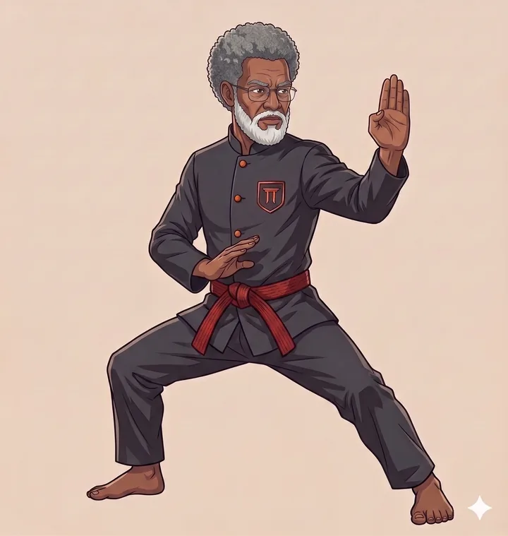

BELT 01
Stance
Live in class
The moveBuild one argument that actually lands — in three sentences.
What is learned
- Claim — take a clear side: say what should happen.
- Reason — give the why behind your claim.
- Impact — say why it matters, who wins what.
Each concept comes with a worked example, a plain-language "how do I find it" rule, and two exercises before the next one starts.
The fight

- Motion on screen, e.g. "Schools should replace exams with project work."
- Students pair up, pick sides: for or against.
- Laptops closed — one live round, 2:00 on the timer.
- After: 5 minutes to rewrite the argument, stronger.
First time most of them ever defend a position out loud — with a structure to hold on to.